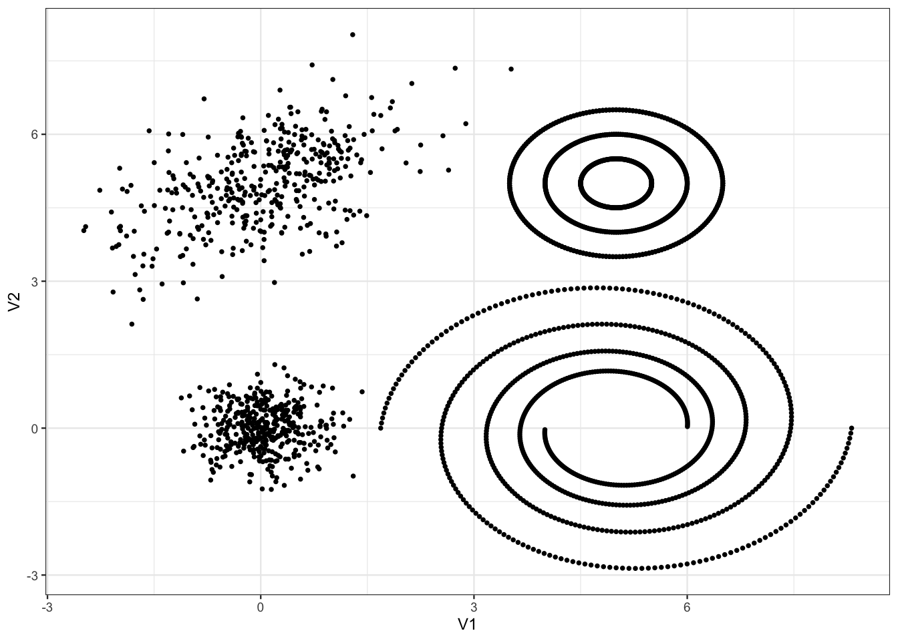

5 Rappels sur le \(k\)-means et la CAH
Ces méthodes sont certainement les deux algorithmes les plus utilisés en apprentissage non supervisé.
L’algorithme des \(k\)-means propose de trouver un représentant pour chaque classe, appelé centroïde, en minimisant :
\[ \frac{1}{n}\sum_{i=1}^n\min_{j=1,\dots,K}\|x_i- c_j\|^2. \]
Plusieurs types d’algorithmes peuvent être utiliser pour trouver des solutions (locales) à ce problème. Une fois la solution obtenue, les clusters s’obtiennent en affectant chaque observation à son centroïde le plus proche.
Une CAH va quant à elle définir des clusters de façon récursive en agrégeant à chaqué étape les deux clusters les plus proches au sens d’une mesure de proximité à définir.
Exercice 5.1 (kmeans et CAH sur R) On considère les données
tbl <- read_delim("data/donclassif.txt",delim = ";")
ggplot(tbl)+aes(x=V1,y=V2)+geom_point()
Discuter du nombre de clusters pour ce jeu de données.
Le choix du nombre de groupes est toujours une question difficile. On peut dire a minimma qu’il y a 4 groupes : un dans chaque coin. Ensuite, il semble éventuellement possible de scinder les groupes de droite en sous-groupes pour arriver au total à 9-10 groupes.
Tester différents algorithmes \(k\)-means, visualiser les résultats et discuter de la capacité de cet algorithme à identifier les différentes structures géométriques des données.
Commençons par un \(k\)-means à 4 groupes :
On passe à plus de groupes
On visualise les résultats :
Sans surprise, le \(k\)-means ne parvient pas à scinder les spirales en bas à droite et les cercles concentriques en haut à droite.
Faire le même travail avec la classification ascendente hiérarchique. On commencera par comparer les différentes méthodes d’agglomération en fonction du nombre de cluster, afin d’en déduire une stratégie efficace permettant notamment d’identifier les spirales et les cercles concentriques.
On commence par calculer la matrice de distances et on visualise les dendrogrammes
On regarde maintenant ce qu’il se passe pour un nombre de classes fixé, par exemple 8.
Ici encore il est difficile d’identifier les cercles concentriques et la spirale. Pour y parvenir, on propose d’utiliser le lien simple avec un très grand nombre de groupes (par exemple 100), et on ne conserve que les groupes à effectif important :
Exercice 5.2 (CAH sur un gros jeu de données) On reprend le même jeu de données mais avec plus d’individus :
tbl <- read_delim("data/donclassif2.txt",delim = ";")
dim(tbl)[1] 70000 2Que se passe t-il lorsque vous faites une CAH ?
Le nombre d’individus est trop important pour calculer la matrice des distances. Il est bien connu qu’on ne peut pas faire une CAH lorsque \(n\) est (trop) grand.
Proposer une solution pour faire quand même la CAH.
La solution classique consiste à faire une classification mixte :
- Faire un \(k\)-means avec un nombre de groupes conséquent ;
- Faire le CAH sur les centroïdes du \(k\)-means (en prenant en compte la taille des clusters). Sur
Sur R on peut faire cela avec la fonction
HCPCdu packageFactoMineR.